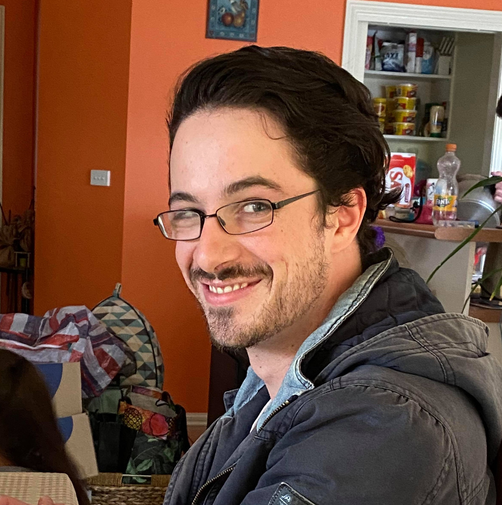

Xavier Lane

My name is Xavier Lane. A member of Exodus, the university team at RMIT.
My Student
Number for RMIT is S3924090. I am
an Australian citizen who was born in Australia. My spoken language is English only. As for
hobbies, I enjoy gaming, both tabletop and video games. I have played in tournaments
across the country for card games and across the state for various video games. I have
finished year 11 in high school but then left to become a carpenter. After working as an
apprentice carpenter for a while I decided I wanted a career change and went into teacher’s
aide work, where I started a teaching degree but realized the industry was not what I wanted
for my career either. After a long time, I decided that my interests were in IT and so decided
to follow that, by enrolling in a Bachelor of Information Technology at RMIT.